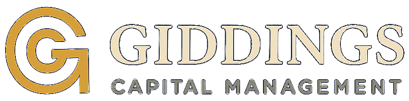

FoldForge
Our stress-testing studio for MetaTrader 5. Monte Carlo reshuffles, real broker spreads and swaps, and a drawdown guardian that enforces prop-firm rules on a live account.
Plans from $19 a month, with a 7-day free trial.
Open FoldForge
Giddings Capital Management is a systematic trading research firm in New Mexico. We build expert advisors, run them on real money, and make the tools we use to stress-test them.
Our stress-testing studio for MetaTrader 5. Monte Carlo reshuffles, real broker spreads and swaps, and a drawdown guardian that enforces prop-firm rules on a live account.
Plans from $19 a month, with a 7-day free trial.
Open FoldForgeAn in-house machine-learning system that trades gold on the hourly chart, trained on 32 years of data. It runs on our own capital while we validate it. It is not for sale.
Walkthroughs of how we validate an EA, what our live account is doing and why, and the mistakes that cost us money. Free, on the FoldForge Academy and our channel.
Visit the AcademyMost EA sellers show you a backtest. We are connecting our live accounts to an independent verification service, so the numbers come straight from the broker and not from us. When it goes live, every result will be here, good or bad.
A high win rate means nothing if the average loss is bigger than the average win. That is the first thing we check, in our own accounts and in FoldForge.
Want to know when the record is published?
Email me when it's liveEvery strategy starts as a plain-language hypothesis with entry, exit and risk defined before any optimisation.
Monte Carlo reshuffles, spread and slippage shocks, and parameter sweeps in FoldForge. If it only works on one ordering of history, it doesn't ship.
The smallest size the broker allows, on a real account, until live fills match the test within tolerance.
Risk rises only as the live record earns it, and every result is published, good or bad.
Warren came to systematic trading through the MetaTrader 5 Strategy Tester, running genetic optimisations over thousands of passes and learning the hard way how easily they curve-fit. FoldForge is the tool he wanted then: one that tells you how a strategy fails before the market does.
He builds and trades the firm's systems himself and publishes his work on MQL5.
Questions about FoldForge, partnerships or press.